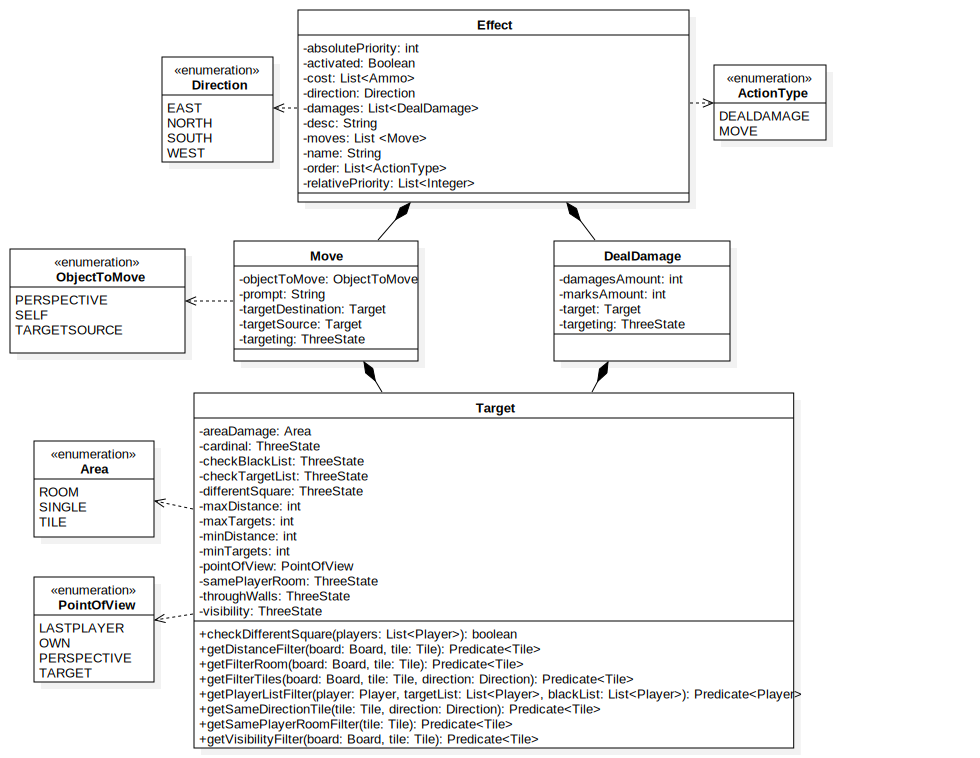
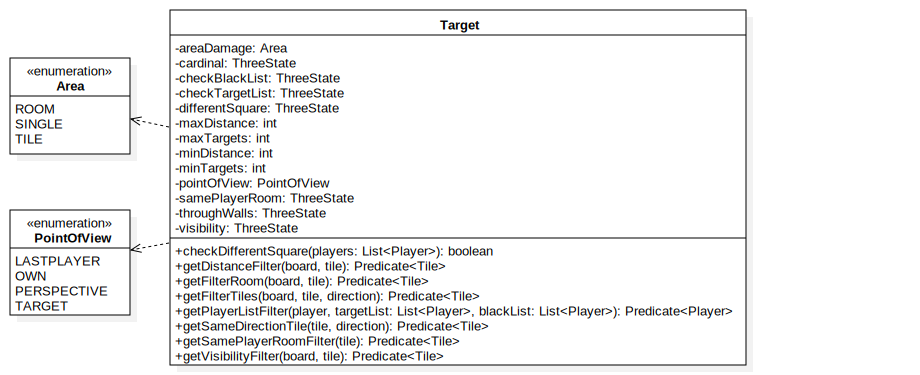
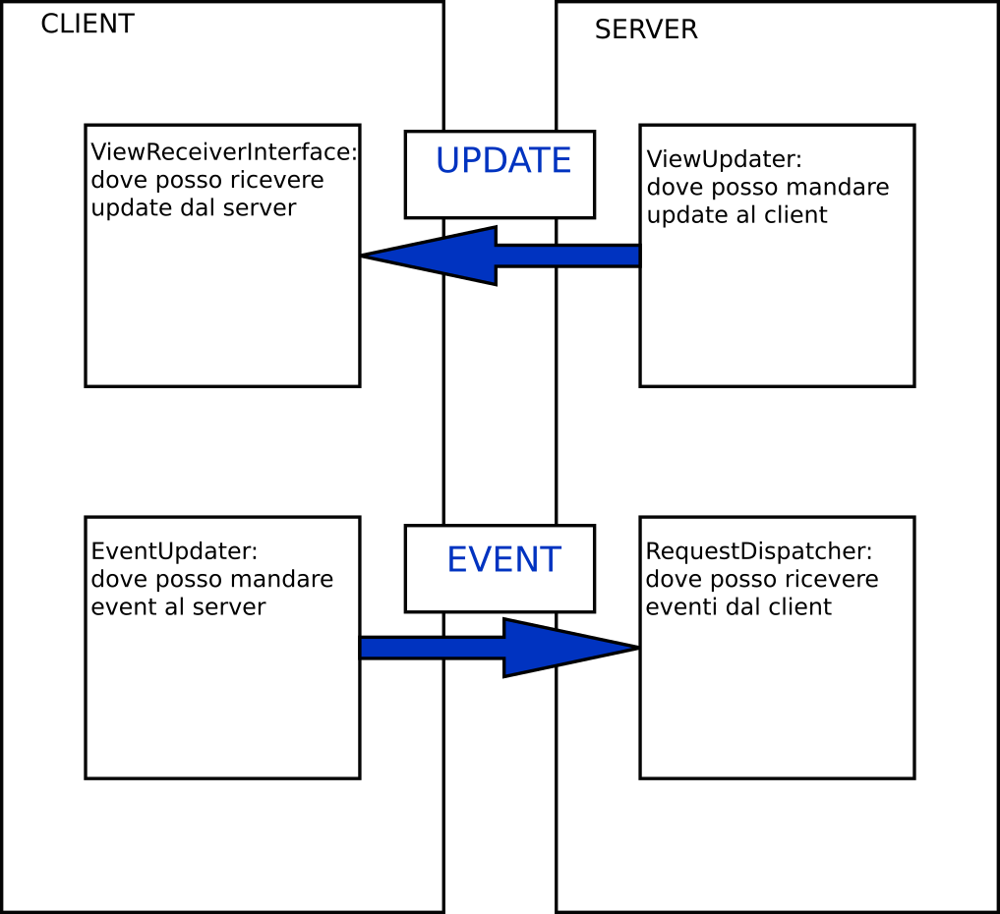

Repetti Luca, Rigoli Fabio, Rizzo Simone
Anno accademico 2018/2019
Armi e powerup configurabili con un formato leggibile e compatto ad hoc.
Per aggiungere armi personalizzate è sufficiente creare un file .btl, aggiungerlo nelle resources, aggiungerne il nome al file index ed associargli un asset grafico da codice
Overview classi per gli effetti 
La classe chiave è Target, che ha vari attributi che permettono di filtrare giocatori o caselle sulla mappa tramite dei Predicate 
Un target non specificato nella configurazione permette di scegliere qualunque opzione. Ogni attributo aggiunto restringe le scelte con i criteri indicati .
Il network è stato astratto tra socket ed RMI tramite l’utilizzo di 4 interfacce, che si occupano di mandare e ricevere messaggi fra network e client
